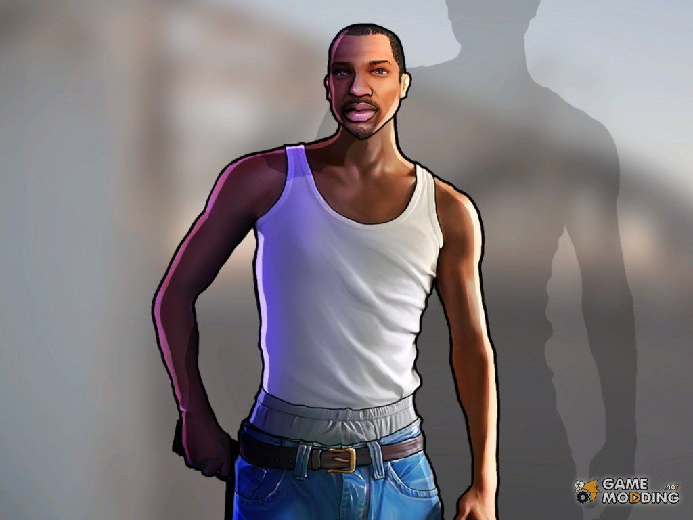
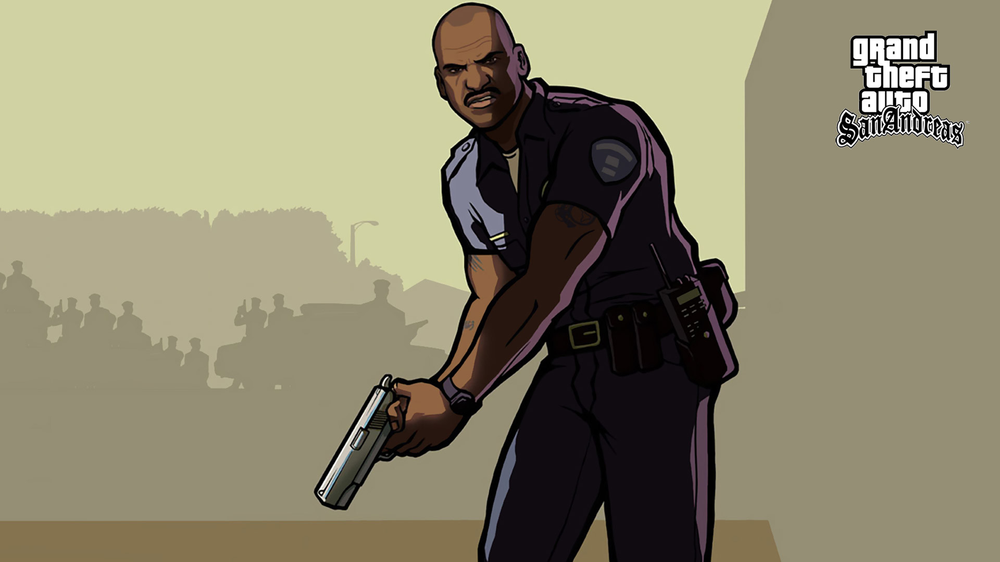
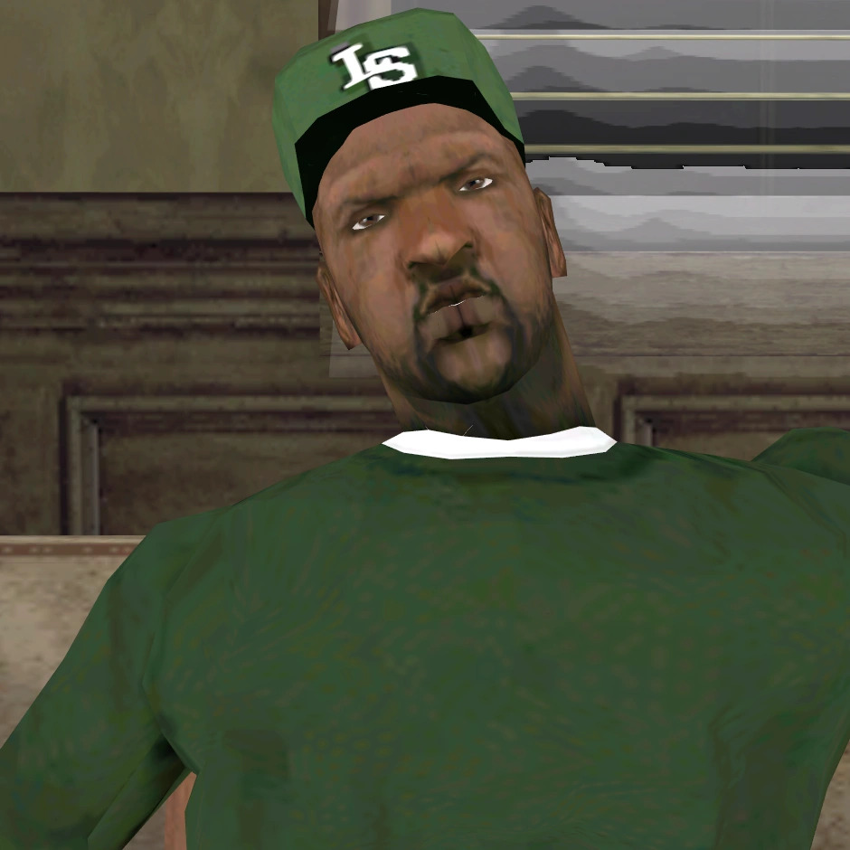
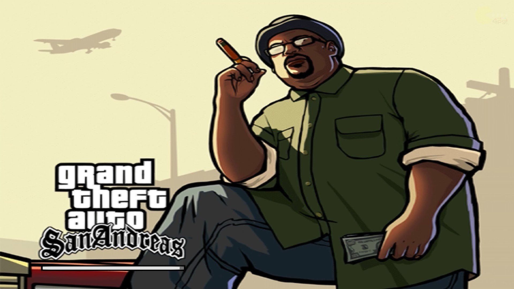

Carl Jhonson "CJ"
Após passar cinco anos em Liberty City, Carl retorna a Los Santos para o funeral de sua mãe. Como protagonista, sua missão é reerguer a Grove Street Families, limpar seu nome das falsas acusações da polícia e descobrir a verdade por trás da tragédia que destruiu sua família.

Oficial Frank Tennpenny
Líder da unidade policial corrupta C.R.A.S.H., Tenpenny é o principal antagonista da história. Ele usa seu distintivo para chantagear criminosos, manipular as gangues rivais a seu favor e transformar a vida de CJ em um verdadeiro inferno desde o momento em que ele pisa na cidade.

Sean "Sweet" Johnson
Irmão mais velho de CJ, Sweet é o líder teimoso e leal da Grove Street Families. Ele se recusa a envolver a gangue com o tráfico de drogas pesadas — o que os enfraqueceu perante os inimigos — e exige que CJ prove seu valor e respeito às raízes do bairro.

Melvin "Big Smoke" Harris
Aparentemente um dos membros mais amigáveis e respeitados da Grove, Big Smoke esconde uma ambição sombria. Sua busca cega por dinheiro e poder o leva a cometer a maior traição da história de San Andreas, aliando-se aos inimigos jurados da gangue e aos policiais corruptos.